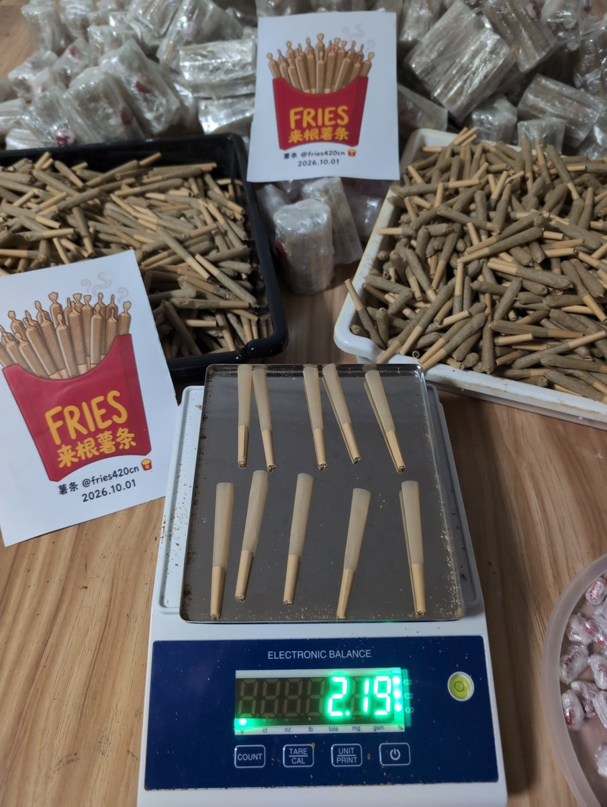

RuGirll5BaBe1 ♱
@KIKOBABY90s
@fries420cn 两天就没有了🌚

薯条🍟(大麻)
@fries420cn
最近发现很多人对 10g 🍃没概念，也不知道能抽多久。
图里是 78mm 卷纸。我自己测过：10g 正常松紧能卷大概 22 支。
别想着压成 10 支。那样会卷太紧，吸起来堵，基本抽不顺。
算一下就有数了： 哪怕一个人啥也不做每天抽。一支大约 0.45g 一个人一天 1 支，能抽三个星期出头 https://t.co/UaMXOpeHYK